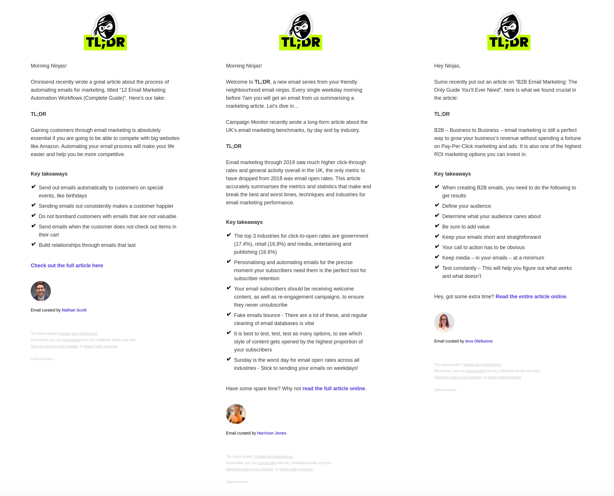

Ninjas sneak up on you. Well, at least in the movies they do. You don't really know that they are there until POW - surprise attack! That's what a good email is all about in some ways: just browsing through your inbox like any other day and then POW - delightful email!
That's how we felt when someone forwarded us TL;DR by MailNinja - a simple email that we'll get to in a bit down below. And in doing a little more research, we connected with Doug who gave us the down-low on what it's like running their email agency. This is how the interview went and what we learned in the process in case you are wondering how ninjas operate.
Yo! What is MailNinja?
Yo back at ya. We’re an email marketing agency who focus entirely on creating awesome email campaigns, and have been doing so for over 15 years.
So you are saying you've been around for a while, eh? What would you say is the most important thing in keeping you in the "biz" for so long?
As the CEO my goal is always to have more customers using our service, but we purposely keep on our toes; our pay as you go pricing means that if we do a bad job, clients won’t stick around! If we onboard a new customer, we start small, prove ourselves, and in time they send more emails as they are getting a great ROI, I see that as a success.
What's the dynamic of your team? Is there a lot of idea sharing and creation or is it pretty linear? How do you think this affects your client’s emails?
Yeh, less white board sessions than before, mainly because we’re all remote and don’t have white boards anymore, but we are always in touch over Slack and chat all the time about ideas. We’re fortunate to have a great team who all have diverse backgrounds and skills, so there’s no shortage of opinions and ideas.
Email is tricky, because it straddles creative, tech and marketing, and in my opinion you won’t find one single person who is great at strategy and analysis, UX and design, development and testing. That’s where we excel, we’ve got people from each area, and we come together to create awesome emails.
How did you collaborate as a team to get it into shape and write the content? What's the process of making an email for a client and the tools you use?
We custom built our own coding tool a few years back called Canvas. It’s kinda like Litmus Builder with public preview links and a commenting feature. In terms of tools, we wrote a couple articles about that which you can find on our own blog. Here are some favorites:
• Page Layers: If you use a Mac and are an email designer or web designer, you need this handy little tool. In a nutshell, it grabs a screenshot of a website and saves it as a layered PSD with all the colours, assets and fonts ready for you to use.
• JPEGmini: If you’re a Photoshop superstar, or indeed have the luxury of time, then you most likely won’t need this tool, but for us it’s an essential bit of kit for quick, bulk compression of email assets before uploading them to the ESP. Image compression is a vital step, as images waiting to load can be a real drag, plus it can affect deliverability.
• Google Fonts: Any email developer will tell you, custom fonts are an important part of the email design’s aesthetic, a company will always want the closest match to their premium web font, and this isn’t always possible. Google Fonts is a lifesaver, giving us a wide range of fonts and there’s usually a close match to be found. A quick tip, if you are looking for a specific premium font, even if it’s not available in Google Fonts, run a quick Google search and you’ll find the top result will be Google’s closest match.
• WhatFont: When designing and creating emails, we sometimes have brand guidelines, but usually we have just a website to go on. There are some great Chrome extensions that can speed this up a little. WhatFont allows you to click on a font on a web page, and detect the font face used, the colours, size and much more.
• Images On/Off: When creating emails, alt text is an important step to ensure when images are turned off, your readers still know what the image was about. This handy tool allows you to toggle images to view the alt text under the images.
How do you QA the process each day for what you build?
We have a multi-step QA process. First the email designer checks the email from a technical and design point of view, then the campaign manager runs come checks from a strategic point of view. This means we get as close to perfect as possible before the customer sees anything. This works pretty well, and has been fine tuned over the years.
Clearly you can't always get it right though. What's an unsuccessful campaign that you ran? What did you learn?
None come to mind, but without wanting to sound cheesy, even an unsuccessful campaign (revenue or open rate wise) will always give you some insight. It’s a continual learning cycle, so we always take away something that we can learn from.
Is that why you created TL;DR? And what is it exactly?
TL;DR is a new thing for us. I knew we needed to get in front of our audience more consistently, I also knew as a busy agency we couldn’t spend hours writing or gathering content, so TL;DR was born.

I’m a big fan of scratching your own itch, and TL;DR does that. I’ve got a short attention span, and I’m always saving up tons of articles to read later, but despite my best intentions I never get around to reading them all. Being a big fan of Blinkist I thought it would be cool to summarize some of these articles because I can’t be the only one that suffers from content overload!
I wanted to create an ongoing email series that hits people’s inboxes by 7am as they’re venturing out to work, meaning they get a shot of inspiration with their morning coffee. Start your day with MailNinja.
So what made you decide to do it this way? Did you have a previous newsletter that wasn’t performing well?
We sent emails, but very sporadicly - when we had time or something to promote. We’re always so busy creating and sending emails for our customers we just didn’t focus on ourselves. The sea change was when we treated our own email program like one of our customers, allocating a campaign manager and planning ahead.
We decided early on, that although we are 100% email, we would promote marketing content; our main target customer is a marketing manager who has to juggle lots of channels. I find the top performing content is usually the stuff from sources people know and love, like Mailchimp, Campaign Monitor or Really Good Emails.
What have you learned from the TL;DR series? It is always short and to the point. Does shorter content perform better than longer newsletters?
Yes, in my view, short form content always out-performs long form content. It’s something that I talked about in our Mailchimp Meetup last year. I always encourage people to focus on less CTAs and less copy where possible, take a hatchet at the copy and remove filler words. If your content has loads of products and offers, split the email content into 2 or 3 emails. Send less more often. If you check the sexiest emails (yes, sexy emails) on Really Good Emails, the best ones are the simplest ones.
What shocked me with TL;DR was the feedback we got. I got replies and messages saying how much people love the emails, from customers, but also from people who we know and respect within the industry.

So do you recommend shorter emails to your clients too?
Yes, always. They sometimes listen!
I guess it really comes down to your audience, if you are B2B and sell high value products and services, or send email-exclusive content, then there is a time and a place for longer form content. Generally, less is more.
Do you think email is the best channel to deliver short-form content then?
In my view, email is the best channel to drive people to your long form content, products or services. We try to keep copy to a minimum and let the design speak loud. You have a few seconds for people to act on your email, so I often encourage a ‘glance test’, which basically means you scan the email to see if the message and the desired action is clear, if not, you’ve lost. Most of the most effective emails on Really Good Emails are simple, yet bold.
That's some good advice. What else would you tell people? Perhaps something that you know now that you didn't when you were starting out...
I think industry average benchmarks and generalized stats are a waste of time; ignore them. Split test every email, document the learning, and set your own benchmarks.
What kind of advice would you give a client about newsletters?
Newsletters are dead. That old way of compiling press articles, news, customer stories etc and sending a single email out each month at a set day and time… So boring! Content should drive the email, and the content needs to be something relevant and interesting. I’m sorry to break the news, but no one gives a shit that you won an award or are featured in the local press. Write relevant and useful content, and push it out through email.
Lightning Round For Kicks & Giggles:
What was the most recent spam message you got in your spam box? What was the subject line?
I get emails all the time by people selling me stuff, I’m not interested, stop it. I’m really bad at this, but if i don’t like the look of an email i’ll report it as spam and block the sender. The most recent was someone selling me mobile app development with the subject line ‘Follow Up...’, which is funny cos i don’t remember the email they are following up.
What is your favorite book?
I skim books, I don’t really read them. I think the Getting Real by Jason Fried and David Heinemeier Hansson stands out to me, mainly cos I’m trying to turn our service company into a SAAS-style company, selling services as products.
Caffeinated beverage of choice: Coffee, Tea, Soda?
Coffee in the morning, Purdey’s with my dinner, then decaf tea in the evenings. So rock’n’roll.
Doug (right) with Ben (middle) and Dan (left), founders of MailChimp.